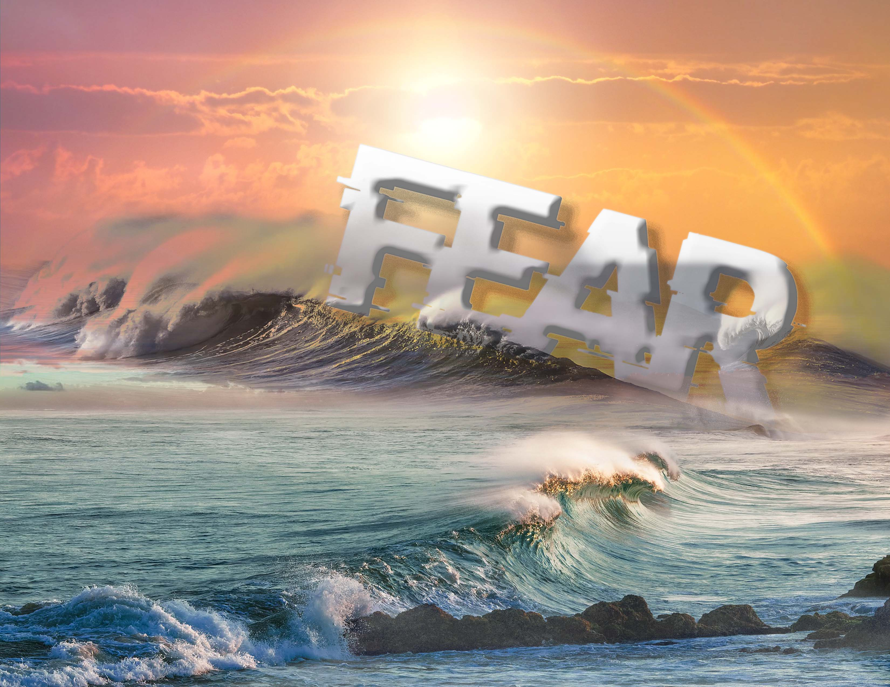
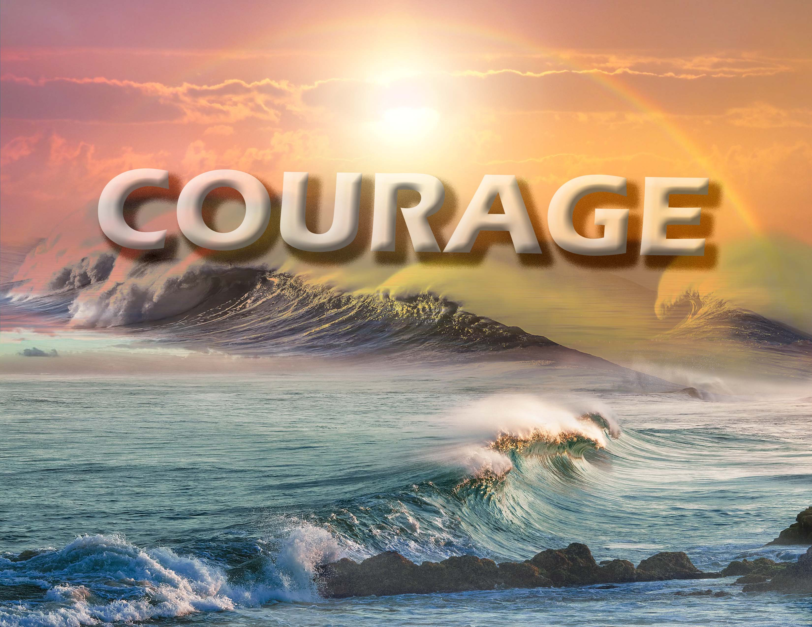

Poster: Fear and Courage
Software
Photoshop
Inspiration
My inspiration came from watching the Olympic Games recently. I saw so many athletes overcome their fare. Fare is always in people’s hearts. There are many kinds of fear that exist in people’s whole life. When people decide to face fear, it’s not as scary as imagined.

